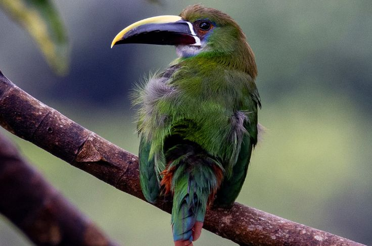

El mapa de la ornitología mundial tiene un centro indiscutible, y ese es Colombia. Aunque el país representa apenas una pequeña fracción de la masa terrestre global, sus cielos y bosques albergan casi una quinta parte de todas las especies de aves conocidas en el planeta. Esta descomunal abundancia natural incluye a más de 80 especies endémicas, es decir, criaturas aladas que no existen en ningún otro rincón de la Tierra de forma silvestre.
La explicación detrás de este fenómeno radica en la geografía del país: la convergencia de la selva amazónica, los valles y las tres ramificaciones de la cordillera de los Andes, sumado a las costas del Caribe y el Pacífico, crean un mosaico perfecto de microclimas. Desde el colorido colibrí del Valle de Cocora hasta el exótico tucán en la Sierra Nevada de Santa Marta, los observadores de aves extranjeros describen la experiencia como adentrarse en un paraíso biológico en constante movimiento.
El podio científico de la ciencia ciudadana
Este liderazgo se revalida anualmente en eventos de ciencia ciudadana global como el Global Big Day, organizado internacionalmente por la Universidad de Cornell. Durante estas jornadas, miles de entusiastas, guías y científicos reportan avistamientos simultáneos en una carrera contrarreloj para registrar la mayor cantidad de especies en un solo día.

En las ediciones más recientes, Colombia ha encabezado sistemáticamente el podio mundial superando a gigantes de la biodiversidad como Perú y Brasil. Con más de 1500 especies distintas anotadas en solo 24 horas, el país se consolida como el destino definitivo para los aficionados de la ornitología internacional por metro cuadrado.